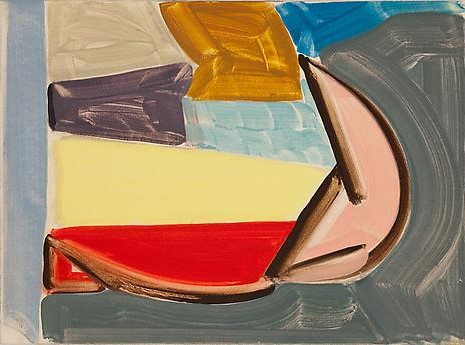
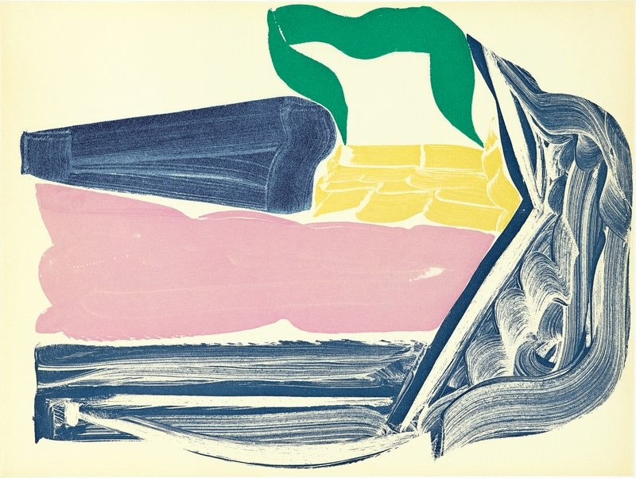

"You can see Treib's hand puckering and smoothing shapes, just like a body might sulpt a bedsheet."
Patricia Treib opened June 7
Curator: Julie Smith | Film: Jane Smith | Featuring: JJ Smith | Words: John Smith & Patricia Trib | Images: James Smith

Flowers in the stream 2004

Flowers in the stream 2004